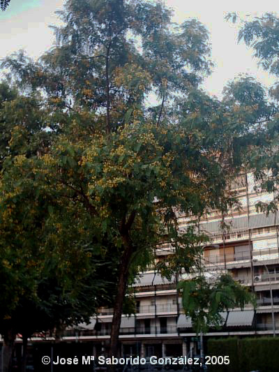
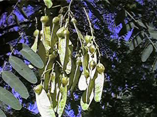
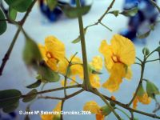

|
Tipuana
speciosa Benth. in Journ.
Linn. Soc. 4, Suppl. 72 (1860)
|
Leguminosas |
| Tipuana, palo rosa, acacia tipú | Árbol semicaducifolio |
| Árbol
semicaducifolio, de 6-9 m de altura [puede alcanzar los 10 m
(1)];
tronco de 46-60cm de cuerda, de color marrón y surcado por
grietas. Hojas alternas, imparipinnadas, compuestas por 11-25 folóolos de 1.5-4 x 0.7-1.7cm (1), oblongos. Inflorescencias en racimos terminales. Flores hermafroditas, papilionadas, amarillas, con una mancha oscura en la base de cada pétalo, de cáliz campanulado, con los sépalos soldados; 10 estambres. Frutos de 4,5-5,8 cm, de tipo sámara, por evolución a partir de una legumbre monosperma, indehiscente, de color marrón, con ala coriácea. |
 |
|
 Legumbres monospermas aladas Carlos Romero Zarco, 2004 |
Observaciones:
Pierde parte de las hojas en otoño, pero en su área de
origen puede presentar un comportamiento diferente.
El nombre genérico deriva
del vulgar “tipú” dado en Brasil. Es una especie de
crecimiento
rápido y barata, muy utilizada en las últimas
décadas en nuevas urbanizaciones y parques.
 |
| Área de origen.- Nativo del Sur de América, se supone que el origen se encuentra en Brasil, Argentina, Uruguay y Paraguay. | |
| Uso en el campus: 5
ejemplares de
sombra en el jardín de la Facultad de Física (hacia 1987)
y 15 más en el parking de las bicicletas, donde fueron
plantados
en los
años 90. |
Localización: |
| (1) Andrés, C. & Rossini, S. (1998) Arboreto de El Carambolo - Catálogo de especies, Emasesa. | |
| José María Saborido González & Carlos Romero Zarco, 2005 | |